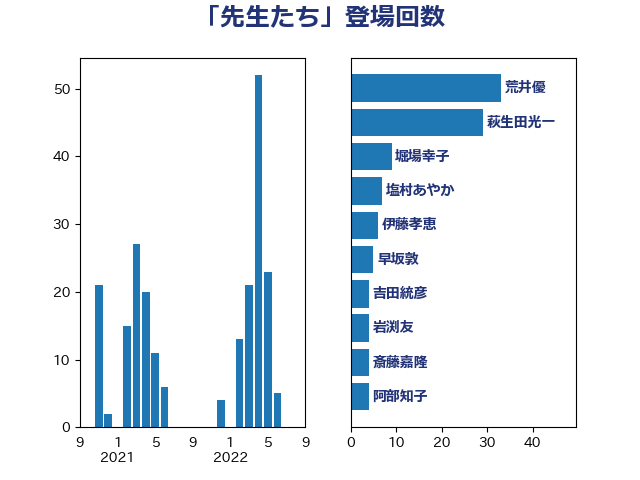

単語「先生たち」

| 荒井優 | 立憲民主党 | 33 回 |
| 萩生田光一 | 自由民主党 | 29 回 |
| 堀場幸子 | 日本維新の会 | 9 回 |
| 塩村あやか | 立憲民主党 | 7 回 |
| 伊藤孝恵 | 国民民主党 | 6 回 |
| 早坂敦 | 日本維新の会 | 5 回 |
| 吉田統彦 | 立憲民主党 | 4 回 |
| 岩渕友 | 日本共産党 | 4 回 |
| 斎藤嘉隆 | 立憲民主党 | 4 回 |
| 阿部知子 | 立憲民主党 | 4 回 |
| 本田顕子 | 自由民主党 | 3 回 |
| 青山大人 | 立憲民主党 | 3 回 |
| 堤かなめ | 立憲民主党 | 2 回 |
| 宮本徹 | 日本共産党 | 2 回 |
| 山下芳生 | 日本共産党 | 2 回 |
| 根本幸典 | 自由民主党 | 2 回 |
| 梅村みずほ | 日本維新の会 | 2 回 |
| 漆間譲司 | 日本維新の会 | 2 回 |
| 田中健 | 国民民主党 | 2 回 |
| 野田聖子 | 自由民主党 | 2 回 |
| 上田清司 | 国民民主党 | 1 回 |
| 佐々木さやか | 公明党 | 1 回 |
| 吉田とも代 | 日本維新の会 | 1 回 |
| 吉良よし子 | 日本共産党 | 1 回 |
| 大塚耕平 | 国民民主党 | 1 回 |
| 宮本岳志 | 日本共産党 | 1 回 |
| 寺田学 | 立憲民主党 | 1 回 |
| 小林茂樹 | 自由民主党 | 1 回 |
| 小沼巧 | 立憲民主党 | 1 回 |
| 山崎正恭 | 公明党 | 1 回 |
| 山本左近 | 自由民主党 | 1 回 |
| 松沢成文 | 日本維新の会 | 1 回 |
| 柴山昌彦 | 自由民主党 | 1 回 |
| 森田俊和 | 立憲民主党 | 1 回 |
| 渡辺創 | 立憲民主党 | 1 回 |
| 片山大介 | 日本維新の会 | 1 回 |
| 石川大我 | 立憲民主党 | 1 回 |
| 石川香織 | 立憲民主党 | 1 回 |
| 笠浩史 | 無所属 | 1 回 |
| 緒方林太郎 | 無所属 | 1 回 |
| 自見はなこ | 自由民主党 | 1 回 |
| 芳賀道也 | 国民民主党 | 1 回 |
| 赤羽一嘉 | 公明党 | 1 回 |
| 長友慎治 | 国民民主党 | 1 回 |
| 阿部弘樹 | 日本維新の会 | 1 回 |
| 青山周平 | 自由民主党 | 1 回 |
| 須藤元気 | 無所属 | 1 回 |
| 高階恵美子 | 自由民主党 | 1 回 |
| 麻生太郎 | 自由民主党 | 1 回 |